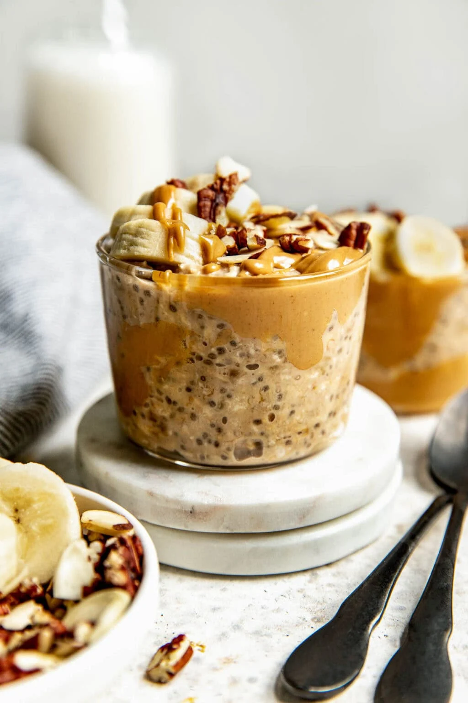

Peanut Butter Banana Overnight Oats

Description
Make these Peanut Butter Banana Overnight Oats for a
nutritious and easy breakfast. Made with only 7 ingredients,
they're a great higher-protein and high-fiber breakfast
option that are great for meal prepping.
Ingredients Instructions
- 1 cup old-fashioned rolled oats
- 1 cup milk of choice (kefir, almond milk, regular milk, etc.)
- 1 ripe banana, mashed (⅓ –½ cup)
- 2 tablespoons creamy peanut butter
- 1 tablespoon pure maple syrup
- 1 tablespoon flax meal or chia seeds (or ½ tablespoon of each)
- ½ teaspoon pure vanilla extract
- Pinch of fine salt
- For optional toppings: sliced bananas, peanut butter, chopped nuts, etc